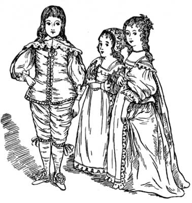
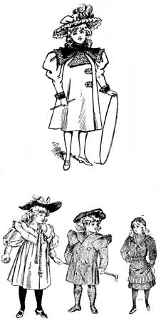
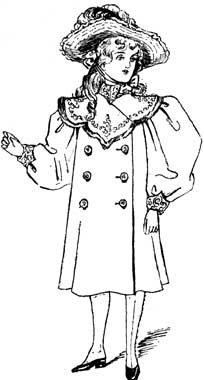
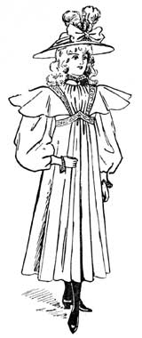
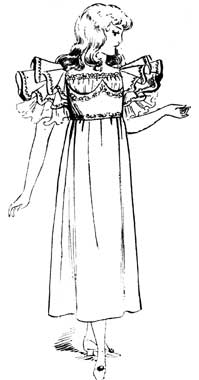
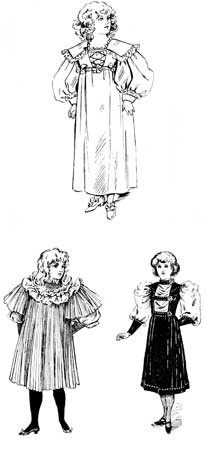

Florence Mary Gardiner, Evolution of Fashion. Davis, ed. from the 1897 edition. [eng]. Cited by chapter/paragraph.
Passages viii.1-viii.25
urn:cts:fuTexts:gardiner.eof.davis:viii.1-viii.25
viii.1CHAPTER VIII.
viii.2A CHAT ABOUT CHILDREN AND THEIR CLOTHING.
viii.3"The childhood shows the man, As morning shows the day."--_Milton._
viii.4Of children's dress in olden times we have singularly few details, and, as a rule, it may be concluded that their raiment was fashioned on similar lines to that worn by the men and women of the country in which they lived, and was more or less ornamented, according to their station in life.

viii.6One or two biblical references enlighten us as to Eastern customs. On the authority of St. Luke, our Saviour in infancy was wrapped in swaddling clothes. "Samuel," we are told, "being a child, was girded with a linen ephod," which appears to have been a close robe or vest reaching from the shoulders to the loins, and confined by a girdle. Considering the climate and the habits of the people, it was probably the only garment used in summer, but in cold weather was supplemented, we presume, by the little coat his mother bought him from year to year, when she and her husband came to offer the annual sacrifice, at Shiloh, where Eli, the High Priest, lived. A coat of many colours was also presented to Joseph in his youth as a mark of Jacob's affection for the child of his old age.
viii.7Greek and Roman children of the gentler sex are usually represented in the chiton, or loose classical gown, combined with a shawl or himation weighted at the four corners, so as to assist the wearer in adjusting it. How to put on this garment was carefully taught as part of a girl's education. The long end was first thrown over the left shoulder. The front part was arranged in folds across the body, passed under the right arm and over the left shoulder or forearm. The girdle sometimes consisted of a cord, at others of metal bands, and by drawing the chiton over it, a double thickness of the fabric covered the vital organs of the body. Boys wore the tunic and toga, and the latter is supposed to have been oblong, with the corners rounded off, so as to give a semicircular effect. Hats were not commonly worn, except by the poor or when on a journey, a fold of the toga or mantle serving for a head covering, and sandals protected the feet.
viii.8The Egyptian labouring classes allowed their children to be nude, and infants were unfamiliar with swaddling clothes. The working man and boy had simply a loin cloth and girdle, and the girl a loose tunic fastened with strings at the neck and reaching to her feet. On the other hand, children of the upper classes in Egypt were repetitions of their elders on a small scale. Girls wore a linen skirt embroidered in colours and fastened with a bright sash, or suspended from the shoulders, and over this a loose transparent robe with long sleeves. The male costume consisted of a loin cloth, and a full robe with short sleeves, or a tunic, and both sexes had elaborately curled or plaited wigs, as the natural hair was only allowed to grow in times of mourning.
viii.9The Roman occupation of Britain left its impress for a long period on the costume of the Anglo-Saxon race. The long-sleeved banded tunic was the usual habit of the industrial classes through the Middle Ages and leg bandages and cross gartering preceded breeches. Quite young boys appear in this dress, and little girls are seen in ancient MSS. in the kirtle and gunna, the equivalents of the modern petticoat and dress. Their hair, however, was allowed to fall naturally, or was dressed with two pendant plaits, and was not concealed, as was so often the case with adult females, by means of the head-rail. The materials used in clothing were to a great extent the produce of household industry. The women servants were employed in spinning, weaving, and sewing, and ladies of the highest rank did not disdain to participate in such labours. Several articles of dress were derived from the tanner, who worked up his leather into shoes, ankle leathers, and leathern hose. The art of tanning skins with the wool or hair on, was also practised, and dyeing was in great request, for in a rude age a love of gaudy colours is a natural characteristic of the people. The most skilful artificers were found in the religious houses, but under each landowner serfs were trained in the mechanical arts. Silk was worn by the wealthy, but the common materials for wearing apparel in this country were cotton, linen, and woollen.

viii.11Among the Anglo-Saxons and their pagan ancestors the desertion of children sometimes occurred, but as the influence of Christianity increased, it was regarded as a crime, and a law was passed for its repression. For fostering a foundling the State allowed 6s. the first year; 12s. the second; and 30s. for the third year; and afterward the foster parent was to receive a sum varying according to the appearance of the child. Children bereft of their father, remained under the mother's care, but until the eldest child became of age were subject to the guardianship of the husband's relations. Mothers usually nursed their own children, cradles were used, and for the first few months their clothing was swathed with a bandage. In this compact form they were more easily carried, though the constraint to which they were subjected, probably prevented that free development of the limbs, which we now consider so essential to health and beauty. If very poor, the father was allowed to sell his son into slavery for seven years, providing the consent of the child was obtained, and one ten years old could give evidence. Until a daughter was fifteen years of age, her father could marry her as he pleased, but afterwards had no power to do so. A boy of fifteen could enter the monastic life if so disposed, and a girl at a somewhat later period. Monasteries offered the best education then procurable, and the clergy were directed to "teach youth with care, and to draw them to some craft." Schoolboys appear to have been kept in order, by the dread of personal chastisement, and great respect and reverence was exacted by their elders.

viii.13In the dress of the Blue-coat School (Christ's Hospital), we see the ordinary costume of boys of the Tudor period. It consisted of a long coat reaching to the heels and knee-breeches, a striped vest, yellow stockings, and a small round cap placed on the side of the head. The dress of little girls may be found on various monumental effigies, in which they appear like their mothers, in full skirts, sometimes distended by a fardingale, the body imprisoned in whalebone to the hips, a folded ruff encircling the neck, and their stockings (according to Stubbs) were of the finest yarn, silk, thread, or cloth that could possibly be had, of changeable colours, cunningly knit, with curiously indented points, clocks, and open seams. The shoes were of black, green, white and yellow velvet, or of leather stitched with silk and embroidered with gold and silver all over the foot.
viii.14[Illustration]
viii.15The paintings of Vandyck bring graphically before us the picturesque elements of the dress of the Stuart era. There is an air of richness and refinement about the long skirted silken frocks embellished with lace, the pointed collars, and beaver hats with trailing feathers universally worn, and the quaint lace caps, which, by a turn of fashion's wheel, have been remodelled for the children of today.
viii.16[Illustration]
viii.17At no period in the history of costume were the styles so offensive to those with a true conception of colour and form than in the first half of the nineteenth century. We have only to turn to the sketches of Leech and contemporary artists to find bare necks and arms, conspicuous underwear, very short skirts distended by a stiffened petticoat or crinoline, white cotton stockings, low shoes fastened by a strap and single button, mushroom hats, aprons and pinafores devoid of elegance and grace, and the hair cut close to the head or arranged in rows of stiff ringlets. Nor did the boys of England, in trousers buttoned high on short jackets, or with tunics worn with frilled linen collars and leathern belts, show to greater advantage. Queen Victoria inaugurated a new system of clothing for boys, when she dressed the young Princes in Scotch and sailor suits, and the wardrobes of all classes have been considerably extended of late, by the open-air life and outdoor sports in which every self-respecting lad indulges. Cricket, tennis, boating, football, and cycling, all imperatively demand appropriate apparel, and tailors now give reasonable attention to this important branch of their business, and provide fabrics and designs suited to the needs of the rising generation.

viii.19Habits of personal cleanliness and the influence of dress on the minds of growing girls is hardly realized except by those directly concerned in education. Many a sensitive child's character has been warped by the thoughtless jeers of schoolfellows, who were quick to perceive that her clothing was not up-to-date or of such good material as their own. On the other hand, vanity, envy, and uncharitableness have been engendered by foolish mothers, who have provided their daughters with inappropriate and extravagant outfits.

viii.21Though many advocate uniforms with distinctive trimmings for girls' colleges, there are drawbacks to the scheme being adopted. Such a course would probably destroy the individuality which we all desire to see applied to the choice of clothing, and it would leave no field for original ideas. Children must be _trained_ to select and wear their clothes to the best advantage, and it is folly to think that they will do so by intuition. Some may possess naturally an artistic sense and a keen eye for colour, but they are certainly in the minority, and rational dress reformers have pushed sensible ideas to the verge of absurdity, till now the name is almost regarded as a term of reproach.
viii.22[Illustration]
viii.23[Illustration]
viii.24How much we owe to pioneers of children's dress reform, and especially to Messrs. Liberty, who evolved what is generally known as the Aesthetic style in dress. From sketches courteously placed at my disposal, I am enabled to put before the reader examples of children's clothing which are artistic in form, light of texture, and which in no way impede the physical development. Those who have the care of children should remember what a sacred charge is imposed upon them, and that their future health mainly depends, upon the manner in which they are clothed during the first few years of life. There must be no tight bands, belts, or garters to prevent circulation and to cause organic troubles; and where corsets are dispensed with, as happily they are in many cases where growing girls are concerned, the weight of the clothing should be borne by the shoulders, not the waist, and this is ensured by cutting undergarments in the princess or combination forms. Many young people suffer from being carelessly shod, and hideous malformations of the feet arise in consequence, while obscure diseases of the brain can sometimes be traced to heavy head-gear, and the strain of over-study. Hats should be of light construction, and afford a grateful shade to the eyes, if that far-reaching ailment of civilisation, short sight, is to be successfully combatted; and special attention must be paid to infants, who may often be seen in public thoroughfares with a hot sun beating down upon them, and the nurse oblivious to the fact. The sight of a tender infant entrusted to the care of a young woman, who has not the glimmering of a notion of how to look after its fragile body, must fill any right-minded person with indignation. Is it unreasonable to expect those who undertake the charge of children to acquaint themselves with at least an elementary knowledge of the construction and functions of the human body? The ignorance of the average nursemaid is appalling; and though a board school education may have acquainted her with the mysteries of the First Book of Euclid, or the rudiments of music, the curriculum rarely includes the simplest instruction on the healthy training of children; and, in consequence, the high rate of infant mortality in this country is a national disgrace.
